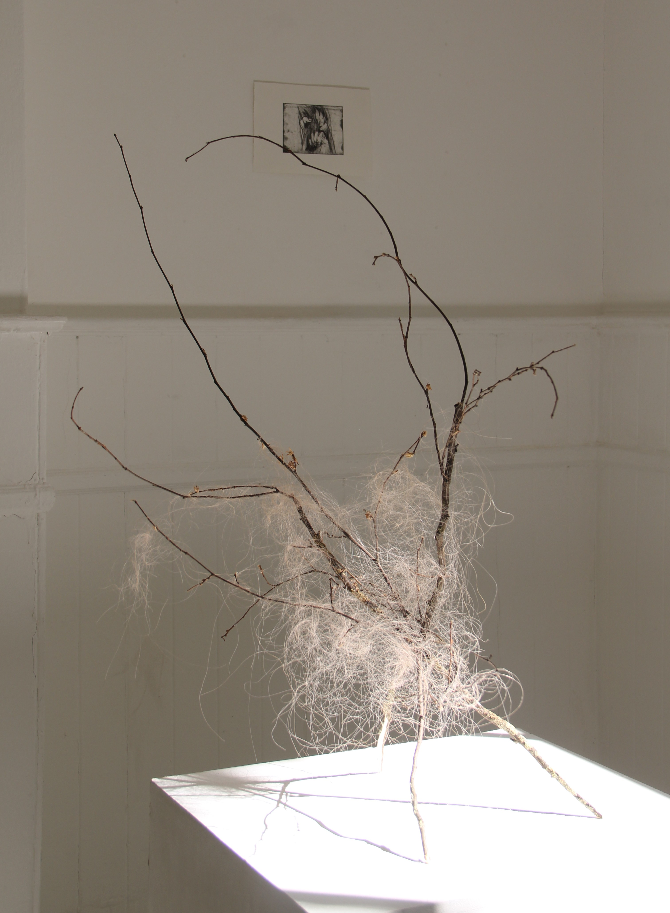

A Place to Grow
A Place to Grow explores ideas of growth, belonging and displacement through hair, branches and printmaking. The works consider the body as a site of attachment and transformation, where organic materials become traces of memory, place and movement.



Drypoint, 10x13cm
Edition A/P
Artwork Information
A Place to Grow, 2023
Human Hair, branches
Sculpture
The Hut, 2023
Drypoint
Edition A/P